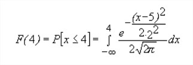
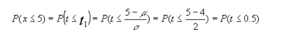
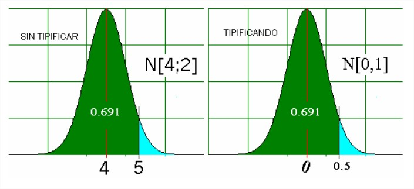

Ej: Calcular el la probabilidad de que una variable tome ciertos valores
Ejemplo adaptado del ejercicio 3 de estadistica.net, Santiago de la Fuente Fernandez, Ejercicios resuletos distribuciones de probabilidad. Universidad de Madrid. pag 20-21.
[1]
un estudiante de la universidad Distrital se encuentra con el siguiente problema:
Sea X una variable aleatoria que se distribuye según una normal de media 5 y desviación típica 2. Calcular la probabilidad de que dicha variable tome valores inferiores a 4. X -> N (5; 2) se nos pide P(x<=4) sin utilizar tablas o algoritmos de recurrencia tendríamos que realizar la integral:

Para no tener que resolver dicha integral y dado que no podemos tener tabuladas todas las posibles distribuciones normales (por ejemplo esta, la N (5; 2)) transformaremos el valor de la variable sobre el que queremos calcular una probabilidad aun valor tipificado (estandarizado), para poder usar la tabla de la N (0; 1) que habitualmente tenemos a mano realizada-calculada por varios autores. Así, siendo t-> N (0; 1) tendríamos:

Así el efecto de lo apuntado sería el expuesto en la imagen:

[2]
Utilizando una tabla de la normal 0,1 obtendríamos el valor 0.691